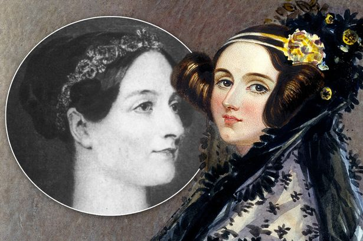

Você sabe quem foi a primeira programadora de computadores da historia? Mesmo que o mundo dos computadores apareça ser dominado pelos homens, há mais de 200 anos nascia Augusta Ada AdaLovelace que deixou seu legado como programadora. Lá atrás em 1842, Ada foi a primeira pessoa a programar. Ela acrescentou algoritmos para o funcionamento de uma máquina mecânica. Então se você consegue fazer várias coisas ao mesmo tempo no seu computador, agradeça esta mulher extraordinária chamada Ada Lovelace, considerada "a mãe da computação." Você sabe quem foi a primeira programadora de computadores da história? Mesmo que o mundo dos computadores pareça ser dominado pelos homens, há mais de 200 anos nascia Augusta Ada Lovelace que deixou seu legado como programadora. Lá atrás em 1842, Ada foi a primeira pessoa a programar. Ela acrescentou algoritmos para o funcionamento de uma máquina mecânica. Então se você consegue fazer várias coisas ao mesmo tempo no seu computador, agradeça esta mulher extraordinária chamada Ada Lovelace, considerada “a mãe da computação”.
